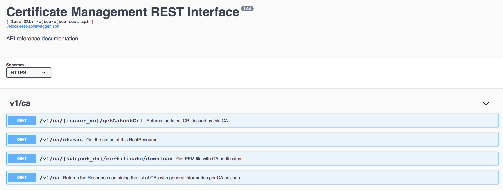
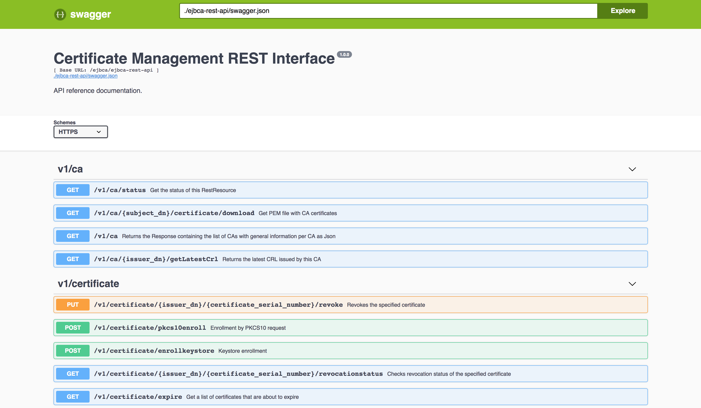

EJBCA 6.14 Release Notes
It's with no small amount of pride that we'd like to announce the release of EJBCA 6.14, one of the most feature rich releases to come out in a long while. Let's get straight to it, because we have quite a bit to discuss.
Features
The Certificate Management REST API
A long requested and requested feature is for EJBCA to support a spick and span new REST API, and EJBCA 6.14 introduces the first iteration of our Certificate Management REST Interface.

So far we've only implemented basic certificate management methods, and we'll be slowly moving on with implementing more powerful features in the near future. You'll find the complete offline API as a part of our documentation here, or deployed locally with your EJBCA installation. For those of you wishing to integrate with EJBCA using REST we deploy Swagger on non-production installations in order to expose the API. Just like with all new protocols added to EJBCA, the REST API is disabled by default and needs to be manually activated.

Complete Proxification of the EJBCA Web Services API
A huge milestone for the EJBCA, we put in a huge effort into providing proxification for nearly all EJBCA WS calls. This means that CAs relying on communication with 3rd party applications can now be placed behind an outgoing-only firewall, with communications being relayed through an EJBCA RA.
Roadmap Update
We're now looking forward to Q3 and EJBCA 7.0, which will be our next Common Criteria candidate. In doing so our goal is to make the complete technology leap from JSP to JSF in our CA UI, a first step to greatly improving the usability of EJBCA. Be also aware that EJBCA 7.0 will drop support for JDK7, so if you haven't upgraded to JDK8 or later yet we strongly recommend doing so.
Upgrade Information
Read the EJBCA 6.14 Upgrade Notes for important information about this release. For upgrade instructions and information on upgrade paths, see Upgrading EJBCA.
Change Log: Resolved Issues
For full details of fixed bugs and implemented features in EJBCA 6.14.0, refer to our JIRA Issue Tracker.
Issues Resolved in 6.14.0
Released on 7th August 2018
Technical Requirement
ECA-6978 - Implement Rest conventions
ECA-7022 - Specify license information for swagger dependencies
Bug
ECA-3298 - One Junit failure on DB2
ECA-4729 - getRequestServerName with ejbca behind a reverse proxy via ajp returns wrong server name
ECA-5416 - SoftCryptoToken used for database protection always debug logs stacktrace about PKCS12 keystore password
ECA-6292 - Common PKI CertHash OCSP extension should be a singleExtension instead of a responseExtension
ECA-6654 - PublicCryptoToken can't be used for database protection verification
ECA-6763 - EJB CLI still logs too much irrelevant info
ECA-6774 - Fix the active status logo in internal key binding.
ECA-6848 - Regression: 'Provide request info' hidden when only 'Select key algorithm' should be
ECA-6862 - CertificateDataSessionBean.findUsernameByIssuerDnAndSerialNumber declared final
ECA-6869 - Upgrade code for 6.11 creates access rules that are not normalized
ECA-6880 - fix unit tests for Commuity MariaDB+ubuntu+JBOSS711GA configuration
ECA-6887 - Return value for rejected approvals in EjbcaWS.getRemainingNumberOfApprovals(int) is incorrect
ECA-6895 - Refine behavior of ApprovalSessionBean.getRemainingNumberOfApprovals(int)
ECA-6901 - Handle non-DNs gracefully in CertTools.isDNReversed
ECA-6923 - Missed slashes in documentation links
ECA-6947 - Validator view not refreshed, editing Validators modifies cache content
ECA-6950 - Documentation: Custom certificate extension data link broken
ECA-6951 - Documentation links on Admin GUI overview page broken
ECA-6959 - Cache CA name lookup in RoleMembers page view scope
ECA-6997 - Database upgrade version comparison does not handle varying number if fields
ECA-7000 - Improve isFullQualifiedDomainName
ECA-7001 - ExternalCommandCertificateValidator handles stdout and stderr incorrectly
ECA-7004 - Public key blacklist validator fails match on RSA keys when not all algorithms are specified in validator
ECA-7014 - External Command Certificate Validator should fail on non-zero exit code
ECA-7015 - The enum constant UNKNOWN needs a corresponding case label in this enum switch
ECA-7016 - Unlikely argument problems in ACME implementation
ECA-7027 - WS API documentation has wrong URL
ECA-7031 - Documentation Link broken for 'Manage Publishers'
ECA-7040 - Regression: External RA (polling) does not work for Keystore Requests
ECA-7043 - Upgrade with long version number can fail
ECA-7057 - Fix documentation link from Public Web
ECA-7063 - Peer connector settings are not saved when creating a new peer connector
ECA-7078 - Jenkins builds failure for test EjbcaWSCVCTest
ECA-7079 - Jenkins builds failure for SystemTests of REST API
ECA-7080 - Jenkins builds failure for AcmeWorkflowTest of ACME
ECA-7083 - CaaValidator always succeeds when the domain ignore list matches
ECA-7084 - Fix Jenkins test error: Non unique method in RA Master API
ECA-7085 - Some JUnit tests don't run
ECA-7086 - Regression: Help labels and at least one option is gone from the CAA Validator
ECA-7088 - some REST-related unit tests are failing in EJBCA_TRUNK_UNIT_PUPPET
ECA-7090 - Swagger inputs in snakecase are not evaluated in REST method input
ECA-7094 - Error "Can't reset to root in the middle of the path" during `ant install` on JBoss ≥6.4.19
ECA-7099 - CRL generation as CRL Issue interval can miss some intervals
ECA-7100 - Revocation CA lookup for nonConflictingCertificateData does not use normalized DN format
ECA-7101 - EjbcaWS.getProfile leaks information about CA's and EEPs
ECA-7108 - X509CA.upgrade could upgrade CA Overlap Time wrong from ancient version
ECA-7111 - Troubleshooting missing from documentation
ECA-7112 - Fix test failure EndEntityProfileSessionBeanTest.testAuthorization
ECA-7115 - WS customLog call calculates CA ID wrong if caName is missing
ECA-7116 - WS customLog call swaps username and admin certificate parameters in log
ECA-7140 - Ignore Top Level Domains field in CAA Validators no longer work
ECA-7141 - orm entry for AcemNonceData incorrect for PostgreSQL
ECA-7142 - Documentation Link broken for under OcspKeyBinding Tab
ECA-7144 - RaMasterApi dispatches non-serializable objects
ECA-7145 - Invalid error handling for EjbcaWS.getProfile (remote)
ECA-7148 - Jenkin's job EJBCA_TRUNK_UNIT_PUPPET compilation failure
ECA-7149 - Jenkins job EJBCA_TRUNK_UNIT_PUPPET has failing unit test of RsaKeyValidatorTest.testRocaWeakKeys
ECA-7150 - Regression ejbca-db-cli crashes with ClassNotFoundException: AcmeNonceData
ECA-7155 - Manage ACME Aliases is linking to SCEP documentation
ECA-7157 - Fields notBefore and notAfter in the order object are optional
ECA-7158 - HEAD endpoint for new-order is missing and required for certbot compliance
ECA-7159 - REST API /expire offset and maxNumberofResults doesn't work on multiple nodes
ECA-7160 - HEAD endpoint for new-account is missing and required for certbot compliance
ECA-7167 - Regression: Cannot generate keystore with autogenerated password from RA
ECA-7173 - ConcurrentModificationException while editing end entity with custom, dynamic, extensions
ECA-7176 - Regression: RA Web upload CSR auto-parsing stopped working
ECA-7179 - Regression: RA Web cleanup deletes existing end entity
ECA-7180 - NPE in ProfileAndTraceInterceptor
ECA-7181 - CertBot fails due to null values in JSON
ECA-7182 - ACME Link headers are not encoded according to the standard
ECA-7183 - Fix ACME notAfter validation failure
ECA-7184 - Check for incorrect approval settings for ACME CA/profile fails
ECA-7192 - ziprelease excludes configdump.sh from release zip
New Feature
ECA-5711 - RA API call base for ACME
ECA-6750 - System tests: VA Publisher with Throwaway certs
ECA-6845 - Fixing unittests EJBCA_TRUNK_MARIADB_RHEL64_JBOSSEAP64_OPENJDK8 Jenkins build
ECA-6851 - Create automated test for ECAQA-3
ECA-6853 - Add Peer RA Protocol Rule for SCEP
ECA-6854 - Create automated test for ECAQA-76
ECA-6858 - Create automated test for ECAQA-67
ECA-6867 - Create automated test for ECAQA-24
ECA-6868 - Create automated test for ECAQA-62
ECA-6874 - Create module for REST API
ECA-6876 - Implement client certificate authentication for REST API
ECA-6878 - REST API call: List of CAs
ECA-6882 - Create JAXRS "certificate" endpoint in ejbca-rest-api module
ECA-6891 - POST service endpoint to certificatecontroller for requesting new server certificate
ECA-6893 - ACME: Implement dns-01 validation method
ECA-6896 - Create automated test for ECAQA-42
ECA-6897 - Create automated test for ECAQA-8
ECA-6898 - User documentation REST API
ECA-6902 - Create REST service for downloading CA certificates
ECA-6903 - REST method for revoking a certificate
ECA-6904 - GET method to get certificates that are about to expire
ECA-6934 - Add RA proxying of EjbcaWS.findUser(UserMatch) and EjbcaWS.editUser(UserDataVOWS)
ECA-6937 - Create a common exception handler for the REST API
ECA-6941 - Add Swagger to the REST API
ECA-6942 - Create automated test for ECAQA-74
ECA-6944 - Create automated test for ECAQA-28
ECA-6948 - Use HEX serial number as identifier in the REST API
ECA-6953 - REST Json provider configuration
ECA-6954 - REST exceptions cleanup
ECA-6955 - REST soft exceptions
ECA-6956 - Create remaining JUnit test for REST
ECA-6957 - REST system tests
ECA-6958 - REST Use profile names as input instead of ID
ECA-6964 - Refactor cert enrollment REST service to do profile and endentity lookups behind RaMasterApi to improve performance
ECA-6970 - Add RA Proxying of EjbcaWS.getAvailableCertificateProfiles
ECA-6971 - Add RA Proxying of EjbcaWS.getAvailableCAsInProfile
ECA-6972 - Add RA proxying to EjbcaWS.processCertReq
ECA-6973 - Add RA proxying to EjbcaWS.cvcRequest
ECA-6974 - Add RA proxying to EjbcaWS.customLog
ECA-6975 - Add RA proxying to EjbcaWS.findCerts
ECA-6982 - Add RA proxying to EjbcaWS.getAuthorizedEndEntityProfiles
ECA-6983 - Add RA proxying to EjbcaWS.getCertificate(String, String)
ECA-6984 - Add RA proxying to EjbcaWS.getCertificatesByExpirationTime
ECA-6985 - Add RA proxying to EjbcaWS.getCertificatesByExpirationTimeAndType
ECA-6986 - Add RA proxying to EjbcaWS.getCertificatesByExpirationTimeAndIssuer
ECA-6987 - Add RA proxying to EjbcaWS.getLastCAChain
ECA-6988 - Add RA proxying to EjbcaWS.getProfile(int, String)
ECA-6989 - Add RA proxying to EjbcaWS. getLatestCRL
ECA-6990 - Add RA proxying to EjbcaWS.getRemainingNumberOfApprovals
ECA-6991 - Add RA proxying to EjbcaWS.isApproved(int)
ECA-6992 - Add RA proxying to EjbcaWS.isAuthorized(int)
ECA-6993 - Add RA proxying to EjbcaWS.pkcs12Req(String, String, String, String, String)
ECA-6994 - Add RA proxying to EjbcaWS.republishCertificate(int)
ECA-6999 - REST endpoint for keystore enrollment
ECA-7007 - REST endpoint to get CRL
ECA-7008 - REST endpoint to search for certificates
ECA-7010 - REST endpoint to check certificate revocation status
ECA-7011 - Start using Converters in REST related response, request and entity classes
ECA-7029 - Link Rest API documentation to the proper place
ECA-7030 - Prevent Swagger exposure in Production
ECA-7032 - Add RA proxying to EjbcaWS.getPublisherQueueLength(String)
ECA-7033 - REST endpoint to finalize enrollment after approval
ECA-7034 - Add RA proxying to EjbcaWS.revokeUser(String, int, boolean)
ECA-7035 - Add CLI command to list publishers
ECA-7038 - Extend EJBCA EJB CLI to allow adding RoleMembers of any supported type
ECA-7039 - Add Cavium Nitrox III as known HSM driver
ECA-7051 - Add protocol configuration for REST
ECA-7052 - Add REST APIs to Peer RA Protocol access rules
ECA-7053 - Add ACME to Peer RA Protocol access rules
ECA-7067 - Add positive audit log messages for all Validation operations
ECA-7076 - REST API - SystemTest - Authorized client requesting a new server certificate
ECA-7077 - REST API - SystemTest - Authorized client revokes a certificate
ECA-7092 - REST API license headers to Enterprise
ECA-7122 - Add RA proxying to EjbcaWS with request local instance first.
ECA-7126 - Add RA Proxying of EjbcaWS.getAvailableCAs
ECA-7127 - Rest APi unit tests are not run in Jenkins
ECA-7156 - Implement CAA identities
ECA-7178 - contacts should not be mandatory for ACME's POST newAccount endpoint
Task
ECA-6861 - Initial prototype of REST API
ECA-6871 - Add Fabiens cmp monitoring script to extras
ECA-6879 - Identification of certificates in REST API
ECA-6890 - Document Wildfly 12 configuration
ECA-6949 - Fix the Jenkins build EJBCA_TRUNK_MARIADB_RHEL64_JBOSSEAP64_OPENJDK8
ECA-7136 - Ensure quality in CAA Validator
ECA-7137 - Ensure quality in REST-API
ECA-7139 - Ensure quality in WS RA-proxying
Improvement
ECA-6090 - Add ability to specify multiple issuers in CAA validator
ECA-6162 - CT log request - optional full hierarchy, full Json request in debug log
ECA-6436 - Ability to set explicit.ecc.publickey.parameters for crypto tokens
ECA-6849 - Simplification of p11 token login (Crypto Token Activation)
ECA-6856 - Use consistent format of library license references
ECA-6863 - Fix easy to fix compiler warnings in Admin GUI classes
ECA-6873 - Improve handling when receiving SCEP getCACaps request for missing CA
ECA-6883 - Refactor X509CAInfo constructors to use build pattern
ECA-6884 - Run Web Tests on windows
ECA-6885 - CMP: add senderKID to responses when they are signed
ECA-6888 - unidfnr.enabled should have a default value
ECA-6892 - Create exhaustive regression tests for ApprovalSessionBean.getRemainingNumberOfApprovals(int)
ECA-6900 - Shift "Contributors" page from ejbca.org into Confluence Documentation
ECA-6905 - ACME draft-12 update: Remove tls-sni-02 and oob-01
ECA-6906 - ACME draft-12 update: Use camelcase instead of dash
ECA-6907 - ACME draft-12 update: New finalize workflow
ECA-6908 - ACME draft-12 update: Update and review all JavaDoc
ECA-6910 - ACME draft-12 update: Remove authz and cert resources "up" Link
ECA-6911 - ACME draft-12 update: newNonce should respond with HTTP 200
ECA-6912 - ACME draft-12 update: Update AcmeAccount creation workflow
ECA-6913 - ACME draft-12 update: Directory meta info should indicate if external account is required
ECA-6914 - ACME draft-12 update: Wildcard certificate issuance
ECA-6915 - ACME draft-12 update: Remove AcmeAuthorization scope
ECA-6916 - ACME draft-12 update: Update AcmeChallenge workflow
ECA-6917 - ACME draft-12 update: Verify response code for wrong content type
ECA-6918 - ACME: AcmeAccount should belong to an AcmeConfiguration
ECA-6920 - ACME persistence: AcmeNonceData
ECA-6922 - ACME draft-06 cleanup: Remove custom JAX-B serialization
ECA-6924 - ACME: Verify certbot compliance
ECA-6926 - ACME: Enable as part of release
ECA-6931 - ACME: Implement the missing calls in RaMasterApi to allow proxy use
ECA-6932 - ACME UI Configuration: GlobalAcmeConfiguration and AcmeConfigurations
ECA-6960 - ACME draft-12 update: Remove authzDeactivate resource "up" Link
ECA-6966 - Info log details when a database upgrade is started
ECA-6977 - Certificate Transparency, add verification of embedded SCTs and upgrade version of google/certificate-transparency-java
ECA-6980 - Remove root certificate from CT submission
ECA-6981 - GUI: Crypto Tokens form usability
ECA-6995 - GUI: End Entities search result revocation usability
ECA-7005 - Small improvement to CT debug logging
ECA-7017 - REST Jackson library unification
ECA-7018 - Add ACME to modular protocols configuration
ECA-7020 - When a CT log returns an error, log at info level instead of debug
ECA-7028 - modify REST enrollKeystore to accept JSON body rather than query parameters
ECA-7036 - Unidfnr data class should have unid as part of protection string.
ECA-7037 - File system property to disable X.509 client cert requirement for Admin GUI
ECA-7041 - Access rule '/cryptotoken/keys/generate/' is required to create CSR for OCSP Key Binding
ECA-7044 - Support Role namespace in EJB CLI
ECA-7045 - Reorganize crypto tokens documentation into a concept and an operational section
ECA-7048 - Adapt new RA API methods to RA API Guidelines
ECA-7049 - Make sure all RA API methods work both locally and remotely, where applicable
ECA-7056 - Create a "CA Overview" page in the documentation
ECA-7081 - Log all CRL parameters used when making a decision to generate a CRL or not
ECA-7087 - improve EJBCA_TRUNK_UNIT_PUPPET jenkins build (or runsa ant target) somehow, so that build error would make the build red
ECA-7091 - Remove Norwegian FNR from log
ECA-7095 - Enable "Don’t allow ROCA weak keys" in CA/B Forum RSA Key Validation Template
ECA-7097 - Merge REST revocation response classes
ECA-7113 - Make the dns resolver and iana root anchor configurable for acme
ECA-7121 - REST - return correct response code from POST and PUT endpoints
ECA-7123 - REST revocationstatus returns 'revoked' for non-existing entries
ECA-7124 - Complete IEjbcaWS JavaDoc for new RA master API calls.
ECA-7129 - Use static json for static swagger REST API documentation
ECA-7131 - SystemTest for REST Certificates search
ECA-7132 - Remove "default" ACME alias
ECA-7134 - Improve REST endpoint Swagger descriptions
ECA-7147 - Use consistent serial number response format in REST API
ECA-7166 - Update the documentation links for the OCSP keybindings page
ECA-7172 - Add new index for searches on AuditRecordData
ECA-7174 - Improve ProfileAndTraceInterceptor to print arguments properly
ECA-7177 - Increase CRL upload size from 60 KB to 250 MB
ECA-7186 - ACME Configuration: Hide EMPTY profile and add info text about Default CA etc.
ECA-7191 - Add request/response logging for REST calls